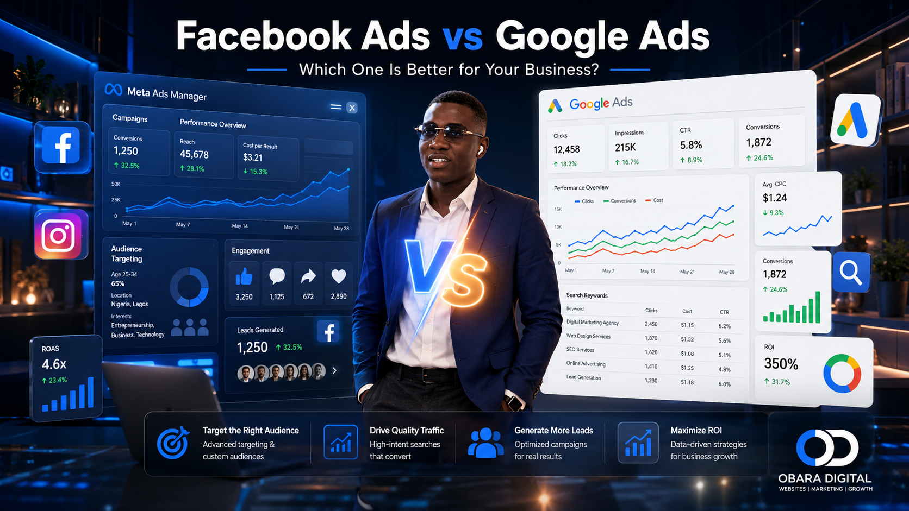

Obara Digital Blog
Learn practical tips about Website Design, SEO, Meta Ads, Google Ads, and Digital Marketing to help your business grow online.

Facebook Ads vs Google Ads: Which One Is Better for Your Business?
Confused about where to advertise your business? Compare Facebook Ads and Google Ads, understand their differences, costs, advantages, and discover which platform can generate more leads and sales.
Read More →Why Your Website Is Not Getting Customers (7 Problems You Need to Fix Today)
Is your website getting visitors but no enquiries? Discover the 7 biggest reasons your website isn't converting visitors into customers and learn practical solutions to generate more leads and sales.
Read More →Why Your Facebook Ads Are Not Getting Results (10 Common Mistakes and How to Fix Them)
Learn the 10 biggest reasons Facebook and Instagram Ads fail and discover proven strategies to generate more leads while reducing wasted ad spend.
Read More →10 Meta Ads Mistakes That Waste Your Budget
Discover the most common Facebook and Instagram advertising mistakes and learn practical ways to improve campaign performance and ROI.
Read More →How to Choose the Right Web Designer in Nigeria (Complete Guide)
Learn how to choose the right web designer, avoid expensive mistakes, and build a website that helps your business grow.
Read More →How Much Does a Website Cost in Nigeria?
Learn website pricing in Nigeria and discover the most important questions to ask before hiring a professional web designer.
Read More →